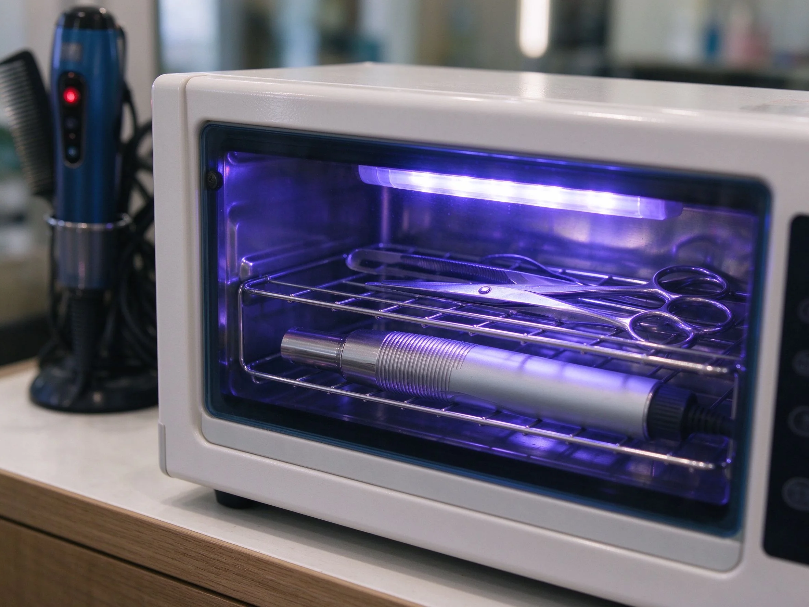

美甲消毒滅菌流程是什麼？入門入門攻略
消毒滅菌的鐵律是『能拋棄就拋棄、不能拋棄就高溫滅菌、表面再酒精擦拭』，這是沙龍的良心。
消毒滅菌流程原理與辨識重點：美甲師不說的工具分區使用
美甲工具會碰皮膚、可能見血（如剪甘皮），不消毒會把細菌、黴菌傳給下一位客人。正確做法分三級：拋棄式（用完即丟）、可重複工具（高溫滅菌箱）、檯面與手（酒精消毒）。
誰適合做消毒滅菌流程？沙龍必修第一課對號入座
這套做法主要適合「沙龍必修第一課」的場合與族群。如果你是通用美甲的愛好者，或正處在入門階段的學習者，都很值得先把它認識起來——它會是你判斷其他款式的地基。
消毒滅菌流程美甲施作步驟：紫外線消毒箱＋拋棄式耗材
可拋棄的一次性用品 → 金屬工具進高溫滅菌 → 工作檯面噴酒精擦拭 → 自己也洗手戴手套 → 耗材分區、不混用。
消毒滅菌流程優缺點分析：美甲持久度與傷甲評估
| 面向 | 說明 |
|---|---|
| 好上手 | 入門階段就能掌握，是通用流派的入門招牌 |
| 辨識度高 | 靠「工具分區使用」一眼認得出，成品是衛生示範店 |
| 變化多 | 可延伸出多種「沙龍必修第一課」的變化款 |
| 注意 | 「工具分區使用」與包邊沒顧好，持久度會打折 |

消毒滅菌流程新手雷區：高溫滅菌最保險與常見錯誤
注意：只噴酒精不等於滅菌。酒精殺不了所有黴菌，金屬工具必須高溫滅菌。省這一步，客訴和衛生稽查就來了。
消毒滅菌流程和其他美甲做法的差別比較
消毒滅菌流程最常被拿來和「銼刀與打磨、工作台與環境」搞混。簡單分：消毒滅菌流程更執著在「工具分區使用」這一個細節上，而隔壁那幾種把重點放在別的地方——同一個美甲領域、不同的側重點，看多了自然分得開。
消毒滅菌流程美甲常見問題 FAQ
Q：紫外線消毒箱有用嗎？ A：它對表面消毒有輔助作用，但殺菌強度有限，不能取代高溫滅菌。兩者搭配最穩。
Q：多久要滅菌一次？ A：金屬工具『每位客人後』就要滅菌，不是一天一次。